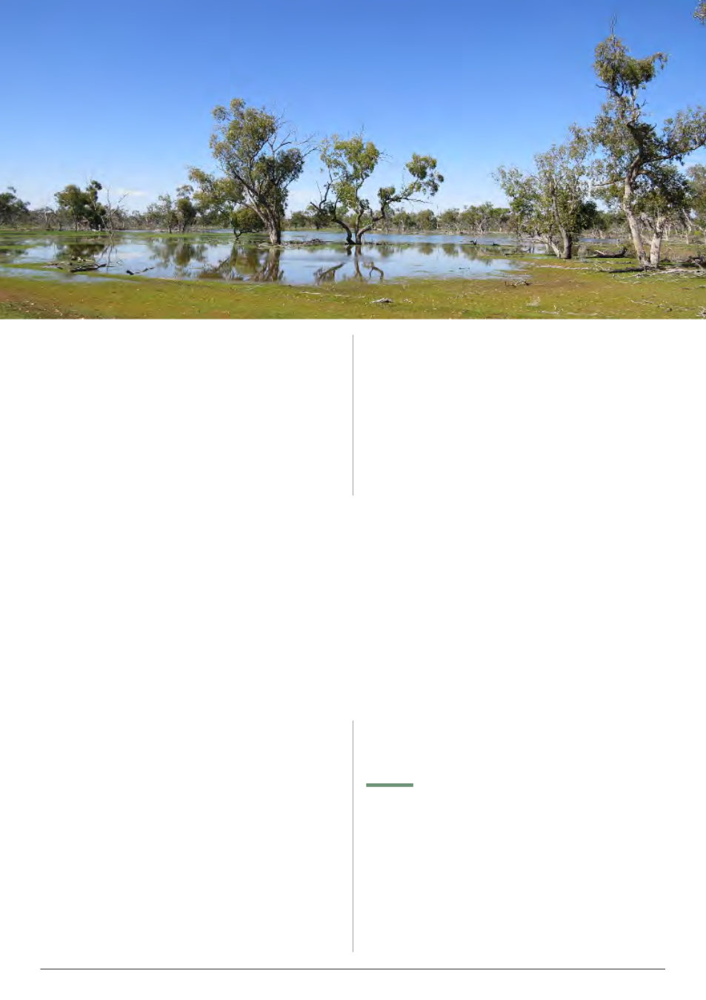

VAA AUSTRALIAN BEE JOURNAL | VOL. 109 No. 09 September 2026 | 27
large increase. Hopefully the weather warms up. Faba bean pollen
is now visible in the brood nest.
It appears the cold winds this winter and lack of vegetation in
the Little Desert resulted in the hives doing poorly.
Spotted gum [Corymbia maculata] has some trees heavily
budded and while I was inspecting some flowers, I noticed two
bees on flowers that were immobile due to the cold.
Despite the cold I had a quick look at some five frame nucleus
hives. Unfortunately, some had starved to death, while on another
bee site they were full of bees and had good stores.
Do not believe some of the recipes for bee supplement patties.
Last autumn I was recommended to add vegetable oil and vitamin
C. I discovered the mix I made was rejected
by the bees. I suspect hives that have
excellent hygienic behaviour had removed
most of the patties. The basic mix of faba
beans, soya beans, Agrisea and sugar has
all been consumed. I think it has helped
the bees a lot as they were on an ironbark
[Eucalyptus tricarpa] honey flow which is
pollen deficient.
A feral bee colony that has been under
a stone bridge for many years at Harcourt
has died. Possibly a queen problem, hungry
or most likely varroa as the region has been
infected for over two years.
Two hives that I have at Bellbrae were
infected by two commercial beekeepers
who shifted hives into the area in March.
17 June 2026 I discovered one hive with
65 varroa in a wash and the other hive with 36. Examination of
the drone brood showed varroa in every cell with pupae. I placed
four oxalic acid strips in the brood nest and after returning from
my holidays I checked the hives. Seven weeks later unfortunately
I forgot my wash kit but the hives are booming full of brood and
bees. The sallow wattle [Acacia longifolia] was making the air
fragrant with perfume. I uncapped the drone brood and struggled
to find any varroa. The oxalic acid strips had been chewed away
in places but were still more than 70% intact. It seems to be
important that the strips are in the centre of the brood nest.
I am hoping the use of the oxalic acid strips every eight weeks will
be enough to control the varroa. If the varroa gets out of hand then
a brood break should get rid of them. I intend to return and do a
wash and replace the oxalic acid strips if required.
Varroa is spreading quickly and will be shifted to new areas with
the movement of swarms and bee hives. I have been uncapping
drone brood to check for varroa and find it is an easier way to find
varroa on the white pupae and they often move around making it
easy to spot them. Sadly, I found varroa in five frame nucleus hives
that have wintered in a remote area near Little River and previously
Lara. I was shocked to find them as I considered the bees had been
remote from possible infection sources. Looks like varroa can be
anywhere now.
It is interesting that varroa will be in the drone brood and
not in the worker brood during initial infestation. While checking
an apiary with low varroa counts, I discovered one strong hive
that had huge numbers of varroa with multiple mites in drone
brood and about 10% of worker brood infested. Obviously, this
hive had robbed out a dying infected hive.
The first varroa detection in the area was
approximately 5 kilometres away six months
ago. Reinfection with varroa is happening.
Feral and unmanaged bee hives are a real
risk of varroa spread.
7/8/2026 As I surveyed the Canola
crop, it was about to send up the runners
with flowers but the leaves looked droopy.
After 2 hours the bees were returning with
pollen from an earlier flowering Canola crop
1.5 km away. Considering the day was a
cool 14 degrees I was pleased. Fortunately,
good rains have fallen and a good flowering
should happen.
9/8/2026 Good rainfall of over 30 mm
throughout the Geelong area will improve prospects for the future.
The Mallee once again had excellent rainfall, and the Mallee trees
have started to grow new growth. Future good honey flows can
be expected.
11/8/2026 [My offsider] Thomas and myself went to shift hives
to Canola. Thomas drove the ute into the bee site. The normally
hard paddock looked wet, but I did not expect the truck to become
bogged, but I had not gotten very far into the paddock when the
front wheels sank. So, despite our attempts the farmer’s tractor
had to pull the truck out. Another two bee sites were ruled out as
also being too wet.
Shifting bees at present can be a challenge with the potholed
roads. A pot hole on a country gravel road through a national
park was so bad that a gate jumped out of its keeper on the truck
tray. I had to change my intended return course due to the road
being too rough to carry beehives without shaking them to pieces.
Bimble box, also known as poplar box, by Ian McAllen, iNaturalist.
“It is interesting that varroa
will be in the drone brood
and not in the worker brood
during initial infestation.
While checking an apiary with
low varroa counts, I discovered
one strong hive that had
huge numbers of varroa with
multiple mites in drone brood
and about 10% of worker
brood infested.”
“had not gotten very far into the paddock when the front wheels
sank. So, despite our attempts the farmer’s tractor had to pull the
truck out. Another two bee sites were ruled out as also being too wet.”